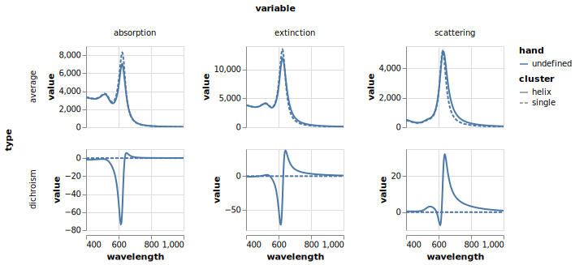

Getting Started
Installation
Pkg.add("CoupledDipole")Example
A typical simulation requires two inputs: a Cluster, describing the configuration of particles, and a Material, describing the wavelength-dependent dielectric functions of all media.
using CoupledDipole
using DataFrames
using VegaLite
## cluster geometry
cl1 = cluster_helix(4, 20, 20, 40, 200, 400, π/4, 0)
cl0 = cluster_single(20, 20, 40) # reference: single-particle
## materials
wavelengths = collect(400:2:1000.0)
media = Dict([("Au", epsilon_Au), ("medium", x -> 1.33)])
mat = Material(wavelengths, media)Material{Float64}([400.0, 402.0, 404.0, 406.0, 408.0, 410.0, 412.0, 414.0, 416.0, 418.0 … 982.0, 984.0, 986.0, 988.0, 990.0, 992.0, 994.0, 996.0, 998.0, 1000.0], Dict{String, Function}("medium" => Main.ex-1.var"#1#2"(), "Au" => CoupledDipole.epsilon_Au))From these two objects we can simply call a high-level function to simulate optical properties. The following lines simulate the orientation-averaged optical response,
oa0 = spectrum_oa(cl0, mat) # reference: just one particle
oa1 = spectrum_oa(cl1, mat)(average = CoupledDipole.CrossSections{Float64}([3822.9052006671395, 3808.367755366424, 3793.4730028345944, 3778.2603131894675, 3762.7732226569365, 3747.059162795447, 3731.169200803407, 3715.157792042868, 3699.082545255442, 3683.00400044423 … 119.96285436499396, 118.79953581850961, 117.65342698150764, 116.52418164701896, 115.41146245130608, 114.3149405994944, 113.23429560121505, 112.1692150158422, 111.11939420692319, 110.08453610542354], [3311.2647752102266, 3304.2953927764065, 3296.980716424013, 3289.354367280715, 3281.453045015952, 3273.3163507902264, 3264.986617874207, 3256.5087502891392, 3247.930069342172, 3239.3001675763317 … 47.86866960033813, 47.48117823916836, 47.099073995582586, 46.7222474977013, 46.35059229671899, 45.984004770982644, 45.622384033762, 45.26563184455015, 44.913652523739856, 44.56635287053049], [519.6129727928206, 511.7362790484216, 503.8521661297185, 495.96694041012086, 488.0879666113686, 480.22356955298045, 472.3829400519839, 464.5760457514699, 456.8135474660293, 449.10672147399157 … 72.09238784526848, 71.31655634196792, 70.55254916292391, 69.80012938257872, 69.05906599930557, 68.32913375681188, 67.610112971868, 66.90178936810605, 66.20395391564156, 65.516402676284]), dichroism = CoupledDipole.CrossSections{Float64}([-0.6269055424457906, -0.6755331690051335, -0.7182397966600725, -0.7551550503850332, -0.7864523385248201, -0.8123435591882956, -0.8330732806012268, -0.8489125912925578, -0.860152813428051, -0.8670992614138235 … 1.0087320845486016, 0.9959829793516742, 0.9834056985798529, 0.9709976584606801, 0.9587563222013691, 0.9466791988430544, 0.9347638421535154, 0.9230078495570204, 0.9114088610992633, 0.8999645584459435], [-1.5171970156337762, -1.5785427837576371, -1.6329757211186855, -1.6806089623743545, -1.721601077563023, -1.7561522872341513, -1.7845000648040603, -1.8069142862700855, -1.8236920903569938, -1.8351526076549993 … 0.07808234025065908, 0.0773481683283868, 0.0766225057428875, 0.07590522094655912, 0.07519618548525948, 0.07449527389144461, 0.07380236358195644, 0.07311733475985585, 0.07244007032099342, 0.07177045576405242], [0.398736150206102, 0.41374637331608977, 0.4264198113056531, 0.43695140244976927, 0.4455298706686188, 0.45233691377354535, 0.4575465907288961, 0.46132490232754925, 0.4638295544221662, 0.46520988878041825 … 0.9217492082488422, 0.9098555679675903, 0.8981234558131431, 0.8865504492671451, 0.8751341690657771, 0.8638722781808889, 0.8527624808339869, 0.8418025215419506, 0.8309901841929049, 0.8203232911512697]))From there we combine the cross-sections in long-format dataframes for plotting,
d0 = oa_df(oa0, mat.wavelengths)
d1 = oa_df(oa1, mat.wavelengths)
d2 = [insertcols!(d1, :cluster => "helix");
insertcols!(d0, :cluster => "single")]
p = d2 |> @vlplot(
width= 120,
height = 100,
mark = {:line, clip = true},
row = "type", column="variable",
resolve={scale={y="independent"}},
encoding = {x = "wavelength:q", y = "value:q",
strokeDash = "cluster:n", color = "hand:n"}
)
p |> save("helix-plot.svg")